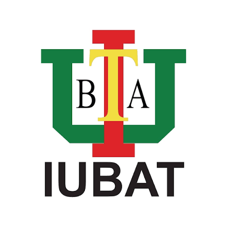

Deep Learning Pipeline for Automated Comet-Assay Image Analysis: Developed an attention-guided U-Net for DNA head-and-tail segmentation and morphometric analysis. Combined crop-based CNN classification with morphometric-feature classifiers. Agreement with expert-reviewed measurements was evaluated using Bland–Altman analysis, Pearson correlation, and the concordance correlation coefficient. The work was accepted by Journal of Digital Health (manuscript DHJ-26-3135, 2026).
Department of Computer Science and Engineering · IUBAT · July 2023–present
Advise undergraduates on academic planning, study strategies, and career development. Monitor academic progress and provide guidance to students who need additional support.